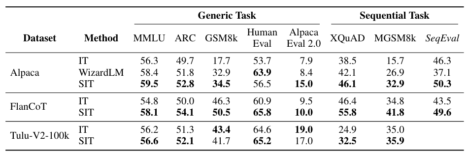

"Finish the paper, release the code and data, and then tweet about this paper"
The issue: Instruction-tuned models perform poorly in sequential tasks
Despite models showed remarkable capabilities on single instructions, we find that they usually struggle to respond to queries with multiple instructions.
This impairs their performance in complex problems whose solution consists of multiple intermediate tasks.
Why is it the case and what does it mean "Sequential Instruction"?
The main reason is most instruction data are consist single query (Alpaca) or generate from NLP tasks (FlanCoT).
We contend that part of the fine-tuning data mixture should be sequential---containing a chain of interrelated tasks.
Some of these examples are intermediate tasks for multilingual and VQA: namely "translate then predict" and "caption then answer".
What is SIT?
We propose Sequential Instruction Tuning (SIT), a novel fine-tuning method that leverages sequential instructions to enhance the performance of large language models (LLMs) on both generic tasks and sequential tasks.
How good is SIT?
Experiments show that SIT significantly outperforms vanilla IT and WizardLM on both generic tasks and sequential tasks.
Specifically, SIT show superior results on reasoning and coding tasks (GSM8K, Codex HumanEval), XQuAD and MGSM (multilingual translation), and it shows significant improvement on SeqEval (evolved from AlpacaEval).
SIT outperforms vanilla IT or WizardLM (response regenerated using the same models) across generic tasks, such as reasoning and coding task. And outperforming in sequential tasks by a large margin.
Our ablation results show that our method are agnostic to the choice of both base model and generation models. For both G=
A variable factor in our comparison of IT and SIT is the length of the training data, based on this, we prepare three ablation experiments to investigate whether SIT’s higher metric scores are attributed to merely having more training tokens.
we check the kinds of instructions generated via Seq-Instruct and draw potential links to model improvements in different skill types. We identify the verb-noun structure in the generated instructions using the Berkeley Neural Parser.
@article{Hu2024FinetuningLL,
title={SIT: Fine-tuning Large Language Models with Sequential Instructions},
author={Hanxu Hu and Simon Yu and Pinzhen Chen and Edoardo Maria Ponti},
journal={ArXiv},
year={2024},
volume={abs/2403.07794}
}